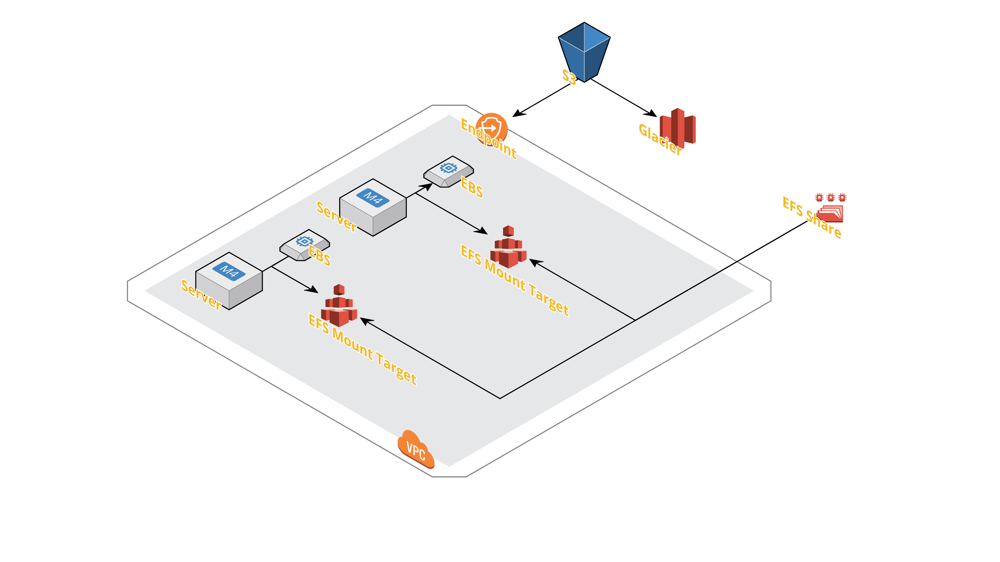
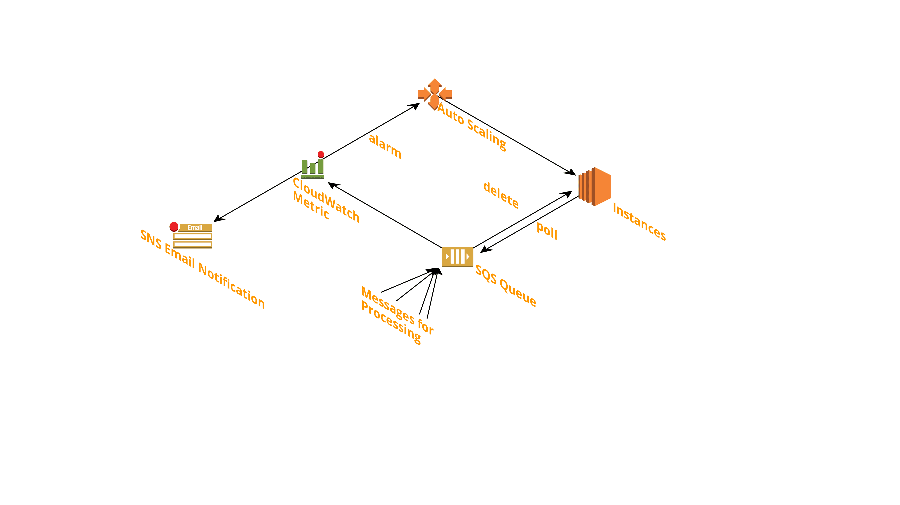

<!DOCTYPE html>
<html>
<head><meta name="generator" content="Hexo 3.8.0">
  <meta charset="utf-8">
  

  
  <title>Amazon Web Services - An Introduction | Kaushal Kumar</title>
  <meta name="viewport" content="width=device-width, initial-scale=1, maximum-scale=1">
  <meta name="description" content="Sections    Introduction to AWS AWS Management Console: AWS Websites Getting started with AWS   Introduction to Storage Services Serverless Computing AWS Storage Services Storage Example Scenario Hybr">
<meta name="keywords" content="aws,devops">
<meta property="og:type" content="article">
<meta property="og:title" content="Amazon Web Services - An Introduction">
<meta property="og:url" content="https://devopspreneur.github.io/2019/05/24/aws/index.html">
<meta property="og:site_name" content="Kaushal Kumar">
<meta property="og:description" content="Sections    Introduction to AWS AWS Management Console: AWS Websites Getting started with AWS   Introduction to Storage Services Serverless Computing AWS Storage Services Storage Example Scenario Hybr">
<meta property="og:locale" content="default">
<meta property="og:image" content="https://devopspreneur.github.io/2019/05/24/aws/2.1.png">
<meta property="og:image" content="https://devopspreneur.github.io/2019/05/24/aws/2.2.png">
<meta property="og:image" content="https://devopspreneur.github.io/2019/05/24/aws/3.1.png">
<meta property="og:image" content="https://devopspreneur.github.io/2019/05/24/aws/4.1.png">
<meta property="og:image" content="https://devopspreneur.github.io/2019/05/24/aws/5.1.png">
<meta property="og:image" content="https://devopspreneur.github.io/2019/05/24/aws/6.1.png">
<meta property="og:updated_time" content="2019-05-27T15:49:15.474Z">
<meta name="twitter:card" content="summary">
<meta name="twitter:title" content="Amazon Web Services - An Introduction">
<meta name="twitter:description" content="Sections    Introduction to AWS AWS Management Console: AWS Websites Getting started with AWS   Introduction to Storage Services Serverless Computing AWS Storage Services Storage Example Scenario Hybr">
<meta name="twitter:image" content="https://devopspreneur.github.io/2019/05/24/aws/2.1.png">
  
    <link rel="alternate" href="/atom.xml" title="Kaushal Kumar" type="application/atom+xml">
  
  
    <link rel="icon" href="/favicon.png">
  
  
    <link href="//fonts.googleapis.com/css?family=Source+Code+Pro" rel="stylesheet" type="text/css">
  
  <link rel="stylesheet" href="/css/style.css">
</head>
</html>
<body>
  <div id="container">
    <div id="wrap">
      <header id="header">
  <div id="banner"></div>
  <div id="header-outer" class="outer">
    <div id="header-title" class="inner">
      <h1 id="logo-wrap">
        <a href="/" id="logo">Kaushal Kumar</a>
      </h1>
      
        <h2 id="subtitle-wrap">
          <a href="/" id="subtitle">A Mechanical Engineer, A Mathematics Enthusiast, and a DevOps Analyst</a>
        </h2>
      
    </div>
    <div id="header-inner" class="inner">
      <nav id="main-nav">
        <a id="main-nav-toggle" class="nav-icon"></a>
        
          <a class="main-nav-link" href="/">Home</a>
        
          <a class="main-nav-link" href="/aboutme">About Me</a>
        
          <a class="main-nav-link" href="/archives">Archives</a>
        
      </nav>
      <nav id="sub-nav">
        
          <a id="nav-rss-link" class="nav-icon" href="/atom.xml" title="RSS Feed"></a>
        
        <a id="nav-search-btn" class="nav-icon" title="Search"></a>
      </nav>
      <div id="search-form-wrap">
        <form action="//google.com/search" method="get" accept-charset="UTF-8" class="search-form"><input type="search" name="q" class="search-form-input" placeholder="Search"><button type="submit" class="search-form-submit">&#xF002;</button><input type="hidden" name="sitesearch" value="https://devopspreneur.github.io"></form>
      </div>
    </div>
  </div>
</header>
      <div class="outer">
        <section id="main"><article id="post-aws" class="article article-type-post" itemscope itemprop="blogPost">
  <div class="article-meta">
    <a href="/2019/05/24/aws/" class="article-date">
  <time datetime="2019-05-24T10:21:26.000Z" itemprop="datePublished">2019-05-24</time>
</a>
    
  </div>
  <div class="article-inner">
    
    
      <header class="article-header">
        
  
    <h1 class="article-title" itemprop="name">
      Amazon Web Services - An Introduction
    </h1>
  

      </header>
    
    <div class="article-entry" itemprop="articleBody">
      
        <h1><span id="sections">Sections</span></h1><div class="toc">

<!-- toc -->
<ul>
<li><a href="#introduction-to-aws">Introduction to AWS</a><ul>
<li><a href="#aws-management-console">AWS Management Console:</a></li>
<li><a href="#aws-websites">AWS Websites</a></li>
<li><a href="#getting-started-with-aws">Getting started with AWS</a></li>
</ul>
</li>
<li><a href="#introduction-to-storage-services">Introduction to Storage Services</a><ul>
<li><a href="#serverless-computing">Serverless Computing</a></li>
<li><a href="#aws-storage-services">AWS Storage Services</a></li>
<li><a href="#storage-example-scenario">Storage Example Scenario</a></li>
<li><a href="#hybrid-storage-example">Hybrid Storage Example</a></li>
<li><a href="#using-s3-service">Using S3 Service</a></li>
</ul>
</li>
<li><a href="#introduction-to-database-services">Introduction to Database Services</a><ul>
<li><a href="#database-scenario">Database Scenario</a></li>
<li><a href="#database-hands-on-example">Database Hands on Example</a></li>
</ul>
</li>
<li><a href="#introduction-to-compute-and-networking-services">Introduction to Compute and Networking Services</a><ul>
<li><a href="#understanding-the-compute-scenario">Understanding the Compute Scenario</a></li>
<li><a href="#networking-and-content-delivery">Networking and Content Delivery</a></li>
<li><a href="#a-networking-scenario">A Networking Scenario</a></li>
<li><a href="#a-hands-on">A Hands-on</a></li>
</ul>
</li>
<li><a href="#introduction-to-aws-management-services">Introduction to AWS Management Services</a><ul>
<li><a href="#a-management-scenario">A Management Scenario</a></li>
</ul>
</li>
<li><a href="#introduction-to-application-services">Introduction to Application Services</a><ul>
<li><a href="#process-decoupling-example">Process Decoupling Example</a></li>
<li><a href="#some-customer-engagement-services">Some Customer Engagement Services</a></li>
<li><a href="#hands-on">Hands on</a></li>
</ul>
</li>
</ul>
<!-- tocstop -->
</div>

<h1><span id="introduction-to-aws">Introduction to AWS</span></h1><ul>
<li>Data centres distributed Worldwide</li>
<li>On-demand delivery of IT resources</li>
<li>Shared and dedicated resources (isolated at hypervisor level)</li>
<li>Benefits:<ul>
<li>economics of scale</li>
<li>accounts isolated at the hypervisor level</li>
<li>pay-as-you-go pricing</li>
<li>no up front cost</li>
<li>reduced maintenance and admin costs (no need to worry about capital expenditure of our own infrastructure)</li>
<li>organised into product categories (compute, storage, database, machine learning etc.)<a id="more"></a>
The AWS global infrastructure is massive and is divided into geographic rehions and those geographic regions are divided into separate availability zones.<br>The AWS GovCloud is located in U.S. West Coast and is specifically for US Government Organizations.<br>There is also a secret region specifically for US Government Intelligence Organizations and CIA is also a customer of AWS.<br>Choice of region may happen to:</li>
</ul>
</li>
<li>optimise latency,</li>
<li>minimise costs, or</li>
<li>address latency requirements.</li>
</ul>
<p>Each Region is divided up into atleast two availability zones that are physically isolated from each other (Each AWS Region has multiple physically isolated Availability Zones).<br>This provides business continuity for our infrastructure if we have it distributed across multiple availability zones if one availability goes down. If the infrastructure in one availability zone geos down, the other availability zone will continue to operate.<br><em>The largest region US -EAST North Virginia has six availability zones.</em><br>The availability zones are connected to each other with high-speed (fast) private fibre-optic networking.<br>There aee over 100 edge locations that are used for the CloudFront CDN (Content Delivery Network). CloudFront CDN cacahes content at edge locations for high performance delivery of ontent. Also provides DDOS protection. It distributes that to edge loactions across the globe for high-speed delivery to our end-users no matter where they are located and it&#x2019;ll do it with very low latency.<br></p>
<h2><span id="aws-management-console">AWS Management Console:</span></h2><ul>
<li>Web-based user interace for AWS</li>
<li>Requires an AWS account</li>
<li>Monitor costs</li>
<li>AWS Console Mobile App<br>One can access AWS Management Console simply by clicking on the <em>My Account</em> Menu from the AWS Website and then selecting the Management Console.</li>
</ul>
<p><strong>We can also access AWS resources through many Software Developement Kits and Command line Interfaces:</strong></p>
<ul>
<li>Software Development Kits<ul>
<li>Create applications that use AWS services as Backend.</li>
<li>SDKs for javaScript, NodeJS, Java, Pythob, .NET, PHP, Ruby, Go, C++</li>
<li>Mobile SDKs for Android iOS, React Native, Unity, Xamarin</li>
<li>Application Programming Interface enables access to AWS using http calls.</li>
</ul>
</li>
<li>Command line Interface<ul>
<li>Control multiple AWS services from the command line and automate through scripts.</li>
</ul>
</li>
</ul>
<h2><span id="aws-websites">AWS Websites</span></h2><ul>
<li><a href="https://aws.amazon.com" target="_blank" rel="noopener">https://aws.amazon.com</a></li>
<li><a href="https://aws.amazon.com/certification" target="_blank" rel="noopener">https://aws.amazon.com/certification</a></li>
<li><a href="https://aws.amazon.com/documentation" target="_blank" rel="noopener">https://aws.amazon.com/documentation</a></li>
<li><a href="https://aws.amazon.com/whitepapers" target="_blank" rel="noopener">https://aws.amazon.com/whitepapers</a></li>
<li><a href="https://aws.amazon.com/products" target="_blank" rel="noopener">https://aws.amazon.com/products</a></li>
<li><a href="https://aws.amazon.com/new" target="_blank" rel="noopener">https://aws.amazon.com/new</a></li>
</ul>
<h2><span id="getting-started-with-aws">Getting started with AWS</span></h2><ul>
<li>Go to aws.amazon.in</li>
<li>Click on &#x201C;Sign Up&#x201D;</li>
<li>Complete the sign up process</li>
<li>Click on &#x201C;My Account&#x201D;</li>
<li>Select &#x201C;AWS Management Console&#x201D;</li>
</ul>
<h1><span id="introduction-to-storage-services">Introduction to Storage Services</span></h1><p><strong>Cloud Computing Models</strong></p>
<ul>
<li>Infrastructure as a Service (IaaS)<ul>
<li>Contains the basic building blocks for Cloud IT</li>
<li>Examples - VPC, EC2, EBS</li>
</ul>
</li>
<li>Paltform as a Service (PaaS)<ul>
<li>AWS manages the underlying infrastructure (usually hardware and operating sysytems)</li>
<li>Examples - RDS, EMR, ElasticSearch</li>
</ul>
</li>
<li>Software as a Service<ul>
<li>Completed product that is run and managed by the service provided. Mostly refers to end-user applications:</li>
<li>Examples - Web Based email, Office 365, salesforce.com</li>
</ul>
</li>
</ul>
<h2><span id="serverless-computing">Serverless Computing</span></h2><ul>
<li>Allows you to build and run applications and services without thinking about servers.</li>
<li>Also referred to as Function-as-a-service (FaaS) or Abstracted services</li>
<li>Examples<ul>
<li>Amazon Simple Storage Service (S3)</li>
<li>AWS lambda</li>
<li>AWS DynamoDB</li>
<li>Amazon SNS</li>
</ul>
</li>
</ul>
<p><em>In S3 we, create buckets and whatever objects we put, it falls into that bucket. We don&#x2019;t need to worry what is behind it, be it linux operating systems, hard drives, file servers etc.</em><br><em>AWS lambda is a place where we can run code in cloud without service.</em><br><em>DynamoDM is a nosql database</em><br><em>AWS SNS is used to send notifications.</em></p>
<h2><span id="aws-storage-services">AWS Storage Services</span></h2><p>AWS <strong>Simple Storage Service</strong> (or S3 in short) is designed to store and access any data over the  Internet. Its a serverless service and as such we don&#x2019;t need to worry what is behind it. We just simple need to create a single thing called bucket and then we upload objects to the bucket and the size of the bucket grows. The size of the bucket is theoretically unlimited and AWS looks after everything for us.<br>Amazon <strong>Glacier</strong> is the cheapest storage option on AWS and it is used for long term archiving of data. It is a serverless service like Amazon S3 but it is not readily accessible as S3. So it should be used for content that is to be archived.<br>We can also setup a lifecycle rule that will automatically migrate old data in Amazon S3 automatically over the Glacier for long tern archiving.<br>Amazon <strong>Elastic Block Store</strong> (EBS) is highly available low latency block storage and it is specifically used for attaching to servers that are launched with EC2 Service. It is similar to attaching a hard drive to our computer at home. It works in the same manner. Its block device storage.<br>Amazon <strong>Elastic File Storage</strong> (EFS) is a network attached storage and and it is specifically for Amazon EC2. Beacuse it is network attached storage, this allows multiple servers to access a one-data source in a similary to a NAS on our network at home and can be accessed by multiple computers on nthat network.<br>The AWS <strong>Storage Gateway</strong> enables hybrid storage between on-premise envirnments and the AWS cloud. It provided a low-latency performance by caching frequently used data on premises while storing the less frequently data in Amazon Cloud Storage.<br>Amazon <strong>Snowball Device</strong> is a portable petabytes scale data storage device that can be used to migrate data and large amount of data from on-premise environments over to AWS Cloud. We simply download the data to the Snowball device then we send it to AWS who will then upload that data to AWS Storage services for us.</p>
<h2><span id="storage-example-scenario">Storage Example Scenario</span></h2><p>Lets consider a AWS Cloud and create a <strong>Virtual Private Cloud</strong> (VPC) inside it. VPC is an impenetrable fortress against attack and no one will be able ro enter this space without us allowing that to happen. Next we will launch two servers to access to data. So for data requirement we launch two EBS devices to our servers, but to make data avaiable to both servers.<br>In case if we have similar requirement for a harddrive to be accessed by multiple devices, we attach NAS i.e., Network Attached Storage to our network and then we setup on our operating systemin our desktop computers to have a mount target for that network attached storage.<br>Similarly in AWS, we can use Mount targets to enable multiple servers to access the one data source.<br><br>In case if we want to store data like we do in <em>Google Drive</em>, and an automated solution that over timw migrates the data over to something more low cost and more long term for archiving, Amazon S3 and Glacier come into picture.<br>We can use S3 to craete a bucket to store/delete the objects. We can also setup lifecycle rule on that bucket so that over a period of time, as objects age, they can be migrated over yo an Amazon Glacier vault. It will still be accessible, just not readily accessible as S3.<br>S3 is outside VPC and to allow traffic to flow in and out of VPC specifically, a VPC endpoint is used.</p>
<h2><span id="hybrid-storage-example">Hybrid Storage Example</span></h2><p>In hybrid storage , we have both onsite storage inside a corporate datacenter and in cloud in AWS S3.<br>Its great for disaster recovery solution becuase it provides high speed access ti our data in our corporate data center. And at the same time, we can take advantage pf the durability and availability of Amazon S3 as a disater recovery solution.<br>The first problem that we are going to encounter is that these corporate data centeres will have petabytes of data and tranfer that over via the internet to the AWS cloud is not going to be practical, si AWS can send us a snowball device. We can upload our data to that and then we can send that back to AWS where they will uplaod it to AWS cloud.<br>Further we need to make sure that data in our corporate center is in sync with the AWS cloud. And here comes AWS Storage Gateway in picture. This will orchestrate all of that for us.<br>If we have high speed link between our corporate data center and the AWS cloud. which we can have with AWS Direct Connect Service, we can use AWS Storage gatewayto orchestrate and manage all that.<br>So basically its tores all the frequesntly accessed data at onsite and also stores all of the data at AWS S3 bucket. Amazon S3 will be a disaster recovery solution.</p>
<h2><span id="using-s3-service">Using S3 Service</span></h2><p>Steps:</p>
<ul>
<li>Craete a S3 bucket</li>
<li>Upload files to the bcket</li>
<li>Download files from the bucket</li>
<li>Empty and delete the bucket.</li>
</ul>
<p>How do we do it.</p>
<ul>
<li>Sign into AWS Management Console.</li>
<li>Go to Services.</li>
<li>Click S3 in Storage Categoy.</li>
<li>Easiest way is to search if not found.</li>
<li>Then on S3 home page, click on Create Bucket Button.</li>
<li>Give the bucket name. It has to be unique across AWS.</li>
<li>Click Next and them Next. We are not taking care of versioning as if mow.</li>
<li>We are creating a private bucket, so we only will be able to access it.</li>
<li>Verify the specifications. US East is largest and has almost all the services with cheapest rates.</li>
<li>Click on the Finish and the bucket will be craeted.</li>
<li>Then the bucket will appear in our bucket list (not your personal bucket list buddy).<br></li>
<li>Further click on the bucket</li>
<li>We we move in, we seee that our bucket is empty.</li>
<li>Bucket is simply a repository to dump objects to. It could be files, videos and even whole directory.</li>
<li>Click on Upload and drag and drop a directory (or file you wish to uplaod).</li>
<li>Post upload we will check the depcifications. Upon review the file upload will start.</li>
<li>If we open the uploaded folder, we can see the files there and from there we can download the files.</li>
<li>If we try to access the object in browsern via link, we will get error because it is a private object</li>
<li>Next we go to S3 bucket homepage</li>
<li>Delete the folder uploaded.</li>
<li>Next we go to S3 management console and then delete the created S3 bucket.</li>
</ul>
<h1><span id="introduction-to-database-services">Introduction to Database Services</span></h1><p>The <strong>Relational Database Service</strong> (RDS) is a fully managed database service that makes it easy to launch database servers in the AWS Cloud and scale them when required.<br>The RDS service can launch services for mySQL including variations of mySQL database engines viz., MariaDB, Amazon Enterprise mySQL (Amazon Aurora), Standard postgresql, Amazon Enterprise Aurora postgreSQL, Microsoft SQL server, Oracle.<br>Amazon <strong>DynamoDB</strong> is a nosql serverless low-latency performace database service.<br>Amazon <strong>Redshift</strong> is a fast fully managed petabyte scale data warehouse based upon postgreSQL and it is a pefect database solution if we are looking for a big data storage solution.<br><strong>ElastiCache</strong> is an in-memory data store or cache in the cloud which allows us to retrieve information from fast fully managed in-memory ccahes instead of relying for slower disk-based databases.<br>AWS <strong>Database Migration Service</strong> orchestrates a migration of databeses over to AWS easily and securely. It can slo migrate data from, one database engine type to another totally different database. For example we can use it to migrate from Oracle to Amazon Aurora.<br>Amazon <strong>Neptune</strong> is a fast reliable fully managed graph database service . It has purpose based high performance graph database engine optimized for storing billions of relationships and querying the graph with milisecond latency.</p>
<h2><span id="database-scenario">Database Scenario</span></h2><p>Lets say we have a onsite oracle relational database and we want to migrate over to Amazon Auroara. So first we will launch an RDS instance in our Virtual private Cloud. Further we will use a database migration service to migrate that data in that on-site Oracle Databse over to target RDS Amazon Aurora Server. Further lets suppose that new database is becoming overwhelmed with requests for frequently accessed data.<br><br>Elastic Cache can help us put an ElasticCache node in front of that RDS instance and that will cache our frequently accessed data and becuase it is delivering that data from memory and it&#x2019;s not delivering it from a harddrive it will be delivered with low latency and at the same time, the load on our database will be massively reducednad any request for any requests that is not in elastication will be simply forwarded to the RDS instance and that way we have we have high-speeed access to  both frequently accessed data as well as less frequently accesssed data.</p>
<h2><span id="database-hands-on-example">Database Hands on Example</span></h2><ul>
<li>Login to AWS Management Console</li>
<li>Go to RDS in database services</li>
<li>If we have any existing database instance there, it will take us to the dashboard or else it will take us to welcome screen.</li>
<li>Click Launch a DB instance.</li>
<li>we will check the check box of free tier wligibility only to make sure that we don&#x2019;t get bill at month end.</li>
<li>we have mySQL community Edition and will select it.</li>
<li>We will make sure that the check box with text <em>Only show options that are eligible for RDS Free tier</em> is checked.</li>
<li>We will select db t2-micro DB instance class.</li>
<li>We will name DB instance idenitier and the name should be unique all of our personal DB instances.</li>
<li>Next we will create a Master username and Master Passwword.</li>
<li>We click on next step.</li>
<li>We will not change the advanced setting as if now.</li>
<li>We have an option to craete database on launch. We will craete one. We are not creating backup as we will set the period of backup retention period as 0 days. No need to worry about monitoring and maintenance as if now.</li>
<li>Then we will click on Launch Database Instance.</li>
<li>The we will view DB instance.</li>
<li>After few minutes, we can see RDS instance running</li>
<li>We can connect to this through endpoint</li>
<li>We will copy the endpoint.</li>
<li>Further we wiill instance mySQL local workbench</li>
<li>Here we will click connction name</li>
<li>hostname shall be the endpoint</li>
<li>We will use master username</li>
<li>Then we will connect it and post that we will add our password on popup. </li>
<li>Post that we can see our database.</li>
<li>We can see the details by opening Object Info.</li>
<li>Further wie will isntall mysql shell locally.</li>
<li>Connect to the sheel using the command - </li>
</ul>
<figure class="highlight bash"><table><tr><td class="gutter"><pre><span class="line">1</span><br></pre></td><td class="code"><pre><span class="line">\connect username@endpoint:port</span><br></pre></td></tr></table></figure>
<p>and post that we will enter the password when popup appaers.</p>
<ul>
<li>Next upon loin, we need to get into sql mode so wewill type in the command </li>
</ul>
<figure class="highlight bash"><table><tr><td class="gutter"><pre><span class="line">1</span><br></pre></td><td class="code"><pre><span class="line">\sql</span><br></pre></td></tr></table></figure>
<ul>
<li>Now Here we are in SQL mode. We need to put semicolon at the end of each command.</li>
<li>Next we will put following command to see the databases</li>
</ul>
<figure class="highlight bash"><table><tr><td class="gutter"><pre><span class="line">1</span><br></pre></td><td class="code"><pre><span class="line">show databases;</span><br></pre></td></tr></table></figure>
<ul>
<li>We will see our <em>test</em> database that we had setup on our console.</li>
<li>This will be a empty databases. So we will use our system database mysql using following command:</li>
</ul>
<figure class="highlight bash"><table><tr><td class="gutter"><pre><span class="line">1</span><br></pre></td><td class="code"><pre><span class="line">\use mysql</span><br></pre></td></tr></table></figure>
<ul>
<li>This will setup our schema to mysql.</li>
<li>Then we will type in following command to see the tables:</li>
</ul>
<figure class="highlight bash"><table><tr><td class="gutter"><pre><span class="line">1</span><br></pre></td><td class="code"><pre><span class="line">show tables</span><br></pre></td></tr></table></figure>
<ul>
<li>Here we will not put semicolon or else it will hang. </li>
<li>Now we will jump to AWS management console and we will delete the isnatance so that we don&#x2019;t get bill at the end of the month</li>
<li>We will go to actions, select delete and we will mark create final snapshot as no, acknowledge it and then delete it.</li>
</ul>
<h1><span id="introduction-to-compute-and-networking-services">Introduction to Compute and Networking Services</span></h1><p>Amazon <strong>Elastic Compute Cloud</strong> (EC2) provide virtual servers in the AWS cloud we can launch one or thousands of instances simulatneously and only pay for whatever we use. There is a broad range of instance type with varying compute and memory capabilities. and those will be optimized for different use cases.<br>Amazon <strong>EC2 AutoScaling</strong> allows us to dynamically scale our Amazon Ec2 capacity up or down automatically accorning to conditions we define., by launching/terminating instances, based on demand. It can also perform health checks on those insatancs and replace them when they become unhealthy.<br>Amazon <strong>Amazon LightSail</strong> is the easiest way to launch virtual servers running applications in the AWS Cloud. AWS will provision everything yoweu need including DNS Management and storage management and get us up and running as quickly as possible.<br>Amazon <strong>Elastic Container Services</strong> (ECS) is a highly scalable high-performance container management service for docker containers which will run on a managed cluster of EC2 instances.<br>AWS <strong>Lambda</strong> is a serverless service and lets us run code in the AWS cloud without having to worry about provisioning or managing. We just need to upload the code and AWS takes care of everything.</p>
<h2><span id="understanding-the-compute-scenario">Understanding the Compute Scenario</span></h2><p>Suppose we launch an EC2 instance inside our VPC. In case if server is getting overwhelmed, we can manually add EC2 instances and further terminate them , when load subsides (horizontal scaling). This doesn&#x2019;t see to be a proper solution, though there will be atleast one EC2 instance running as there will many endpoints in this architecture and if endpoint is down (i.e, EC2 instance for that endpoint has been removed), links won&#x2019;t work.</p>
<p>So in this case we can take help of <em>Elastic Load Balancing</em> where it can receive traffic from end users and it will distribute traffic to and EC2 instance that is avaialble. If another equests come, it will direct to another available instance. And in this way we will be able to balance load. Ib case any EC2 inastance become unhealty, it will file a health check and won&#x2019;t route traffic to the server. </p>
<p>Also if we have services where load is intermittent, say in an hour ot two demand goes up and down, it is not a practical solution. Here comes <em>Auto Scaling Service</em>, which will launch new EC2 instances when traffic goes up and terminate them, when traffic goes down. It can also perform health checks and if for any reason, the server becomes unhealthy, it will replace it with healthy one.</p>
<h2><span id="networking-and-content-delivery">Networking and Content Delivery</span></h2><p>Amazon <strong>CloudFront</strong> is a global Content Delivery Network (<em>CDN</em>) securely delivers our frequently requested content to over 100 edge locations across the globe and by doing so, it achieves low latency and high transfer speeds for our end users. It also provides protection against DDoS attacks.<br>Amazon <strong>Virtual Private Cloud</strong> (VPC) lets us provisioon a logically isolated section of AWS and we can launch AWS resources in thatb VPC that we wourselves define. VPC is our personal space within the AWS Cloud and no one can enter it, unless we allow thwm to enter it.<br>AWS <strong>Direct Connect</strong> is a high speed dedicated network connected to AWS. Enterprises can use it to establish a private conncetion to AWS Cloud in situations where stanadard internet connection won&#x2019;t be adequate.<br>AWS <strong>Elastic Load Balancing</strong> (ELB) automatically distributes incoming traffic for our application across multiple EC2 instances and also in multiple Availability zones so if one availability zone goes down, the traffic will still go to the other availaibility zones and our applicatyion will continue to deliver respenses to requests.  It also allows us to achieve high availability and fault tolerance by distributing traffic evenly amongst those instances and it can also bypass unhealthy instances.<br>Amazon <strong>Route 53</strong> is a highy avaialble  and Scalable Domain Name System (<em>DNS</em>). It can handle direct traffic for our domain name and direct that traffic to our back-end web server.<br>Amazon <strong>API Gateway</strong> is a fully mananged serverless service that makes it easy for developers to create and deploy secure application programming interface (<em>API</em>) at any scale and it can handle all the tasks involved in accepting and processing us to hundreds of thousads of concurrent API calls.</p>
<h2><span id="a-networking-scenario">A Networking Scenario</span></h2><p>Lets consider a scenario where we have kept EC2 instances inside AWS VPC in two availaibility zones to be on a safer side. For if there is only one availaibility zone and it goes down, our traffic will have nowhere to go and our application stops delivering respenses to requests. Using Elastic Load Balancer, we can distribute traffic across multiple Traffic zones across multiple availaibility zones. </p>
<p></p>
<p>Suppose we have lot of static cotents on our application and it isn&#x2019;t chaning much, so it won&#x2019;t be efficient for us to continue to deliver them from EC2. We can use Cloud Front Delivery Network to assist us on this. CloudFront will cache them and distribute that across hundreds of edge locations across the globe so whenever our end users requests that content, it will be delivered to them with really high speed and low latency and at the same time, it&#x2019;s going to take the load off from our EC2 instance. It will significantly reduce our costs. EC2 will continue to get requests for dynamically changing contents.</p>
<p>Further the DNS name for the CloudFront Distribution will be very complicatedand it just won&#x2019;t mean anything to end user. Ideally we will want our user to type in  <em>our domain name</em> which should get forwarded to the CloudFront. Route 53 does exactly the same.</p>
<p>Let&#x2019;s say we work for a large enterprise that has it&#x2019;s own corporate data center. Next we will look at a solution where Employees are work at a faster solution. In this case, we will use private high-speed-fiber-service AWS Connect which will very fast network between our corporate data center and AWS.</p>
<h2><span id="a-hands-on">A Hands-on</span></h2><ul>
<li>Go to AWS Management Console</li>
<li>Go to Services -&gt; Compute -&gt; EC2</li>
<li>This will take to EC2 dashboard</li>
<li>Launch a EC2 Amazon Machine Image (AMI). We can select a AMI provided by AWs or from AWS user community.</li>
<li>So we will search for Wordpress AMI and select the t2-Micro instance, its free in some limit.</li>
<li>We will Enable Auto Assign Public IP. </li>
<li>Further with defaulyt settings, we will review and Launch</li>
<li>We will proceed without key pair now</li>
<li>Further we will launch it</li>
<li>Thn we will view it and after few minutes the status will change from pending to running</li>
<li>Further we can see a public IP which has been craeted.</li>
<li>If we go to that in browser, we will see the blog</li>
<li>People at bitNami have made it in such a way that it has created username and password and embedded them in logs.</li>
<li>So we will go to console -&gt; Acttions -&gt; Instance Setting -&gt; Get System Logs</li>
<li>We will get the Bitname password there </li>
<li>Further we will hit the public IP in browser foloowed by forward slash and text <em>admin</em></li>
<li>We will put <em>user</em> as user and paste in the password that we got.</li>
<li>Upon enter we ill raech our wordpress admin dashboard.</li>
<li>Here we can do whatever we want.</li>
<li>Now we will get rid of them</li>
<li>Go to Actions -&gt; Instance State -&gt; terminate</li>
<li>It will terminate the instance.</li>
</ul>
<h1><span id="introduction-to-aws-management-services">Introduction to AWS Management Services</span></h1><ul>
<li>Provisioning</li>
<li>Monitoring and Logging</li>
<li>Operations Management</li>
<li>Configuration Management</li>
</ul>
<p><strong>CloudFormation</strong> allows us to use a test file to define our infrastructure as well as deploy resources on AWS. This allows us to define our infrastructure as code and we can manage our infrastructure with with the same version controls that we use to manage our code.<br>AWS <strong>Service Catalog</strong> allows enterprises to catalogue resources that can be deployed on the AWS Cloud. This allowas an enterprise to achieve common geovernance and compliance for its IT resourcesby clearly defining what is to be allowed to be deployed on the AWS Cloud.<br>AWS <strong>CloudWatch</strong> is a monitoring service for AWS cloud resources and applications that are deployed on the AWS. It can be used for triggering scaling operations or it can be also used for providing insight into our deployed resources.<br>AWS <strong>AWS System Manager</strong> provides a unified user interface that allows us to view operational data from multiple AWS AWS services and to automate tasks across our AWS resources that helps to short thr time to detect and resolve operational problems.<br>AWS <strong>Cloudtrail</strong> monitors and logs AWS account activity including acytions taken through the</p>
<ul>
<li>AWS Management Console,</li>
<li>The AWS SDKs, </li>
<li>CLI tools</li>
<li>and other AWS tools.<br>This greatly simplifies security analysisof the activity of users of our AWS account.<br>AWS <strong>Config</strong> enables us to access auit and evaluate the configurations of our AWS resources. This simplifies </li>
<li>compliance auditing,</li>
<li>security analysis,</li>
<li>change management and control and</li>
<li>operational troubleshooting<br>AWS <strong>OpsWorks</strong> provides managed instances of <em>Chef</em> and <em>Puppet</em>. Chef and Puppet can be used to configure and automate the deployment of the AWS resources.<br>AWS <strong>Trusted Advisor</strong> is an online expert system that can analyze our AWs account and the resources inside it and then advise us on how to achieve high security and best performance from those resources.</li>
</ul>
<h2><span id="a-management-scenario">A Management Scenario</span></h2><p>We will use a billing and cost management console and the cloud service to create a billing a alert  and that will notify us using a Simple Notification Service when our account has exceeded a budgeted amount. Lets see how to do it.<br></p>
<ul>
<li>To enable billing alerts, we will go to our account dashboard services menu and we go the billing dashboard.</li>
<li>At left hand side, we will go to prefernces, Check the box of <em>Receive Billing Alerts</em> if not and then save the preferences.</li>
<li>Then we go back to console. </li>
<li>We will go to Services</li>
<li>We will go to Management Services</li>
<li>We will go to Cloudwatch</li>
<li>Jump to Alarms</li>
<li>Click on Create Alarm</li>
<li>Select the metric Total Estimated Charge  from the popup.</li>
<li>Then we select Next and select the currency and then click Next.</li>
<li>We give metric a name and a description</li>
<li>We need to set a point at which we will receive the alarm, say 10 dollars</li>
<li>Scrolls to actions and craete a new list, add an email and create alarm. </li>
<li>This has created a SNS topic. WE will receive a popup where we will be asked to verify the email We have to confirm the email address to receive the alert.</li>
<li>Go to Services and then to Simple Notification Services and we can see a topic there which we have created.</li>
</ul>
<h1><span id="introduction-to-application-services">Introduction to Application Services</span></h1><ul>
<li><strong>Step Functions</strong> makes it easy to coordinate the componets of distributed applications amd microservices using a visual workflow.</li>
<li>Amazon <strong>Simpe WorkFlow Service</strong> (SWF) works in a similar way to step functions in coorfinating multiple components of a bsuiness process. <em>For new applications, it is receommended to use step functions and not SWF Service.</em></li>
<li><strong>Simpe Notification Service</strong> is a fully flexible fully managed pub/sub messaging service. We can craete topics and users subscribe to that topic. When we publish a message to the topic, the users who have subscribed to that topic will receive that message. It can also be used for push notifications for mobile devices.</li>
<li>Amazon <strong>Simpe Queuing Service</strong> (SQS) is a fully managed Message Quering Service, which makes it easy to decouple our applications from demand. In simple words it allows messaages to be uidl up in a queue until the processing server  that processes those messages can catch up with the demand.</li>
</ul>
<h2><span id="process-decoupling-example">Process Decoupling Example</span></h2><ul>
<li>If average demand exceeds processing capacity, queue will grow indefinitely</li>
<li>SQS can provide Cloudwatch metrics that can be used with auto scaling.<br></li>
</ul>
<p>Consider we have an application running on an auto scaling group of EC2 instances and it is a process server  as it processing messages as they come in. As the demand increases, auto scaling group launches new instances to cope up with new need, but it takes 5-10 mintes to spin up new instances. So in case of the rapid increase, during this tenure, with SQS we can let the message come in and they can build up until such time that our auto scaling group of EC2 instances get to the queue and empty out.</p>
<p>There is a possibility that many instances might get unhealthy at a momemt leading to infinite messaging building up. Or may be beacuse of a faulty update the messages count might spike. So for such situations we can setup a CloudWatch Metric and that will alert  us with an SNS email notification that our SQS queue is continuing to grow and we need to invstigate further.</p>
<p>Here we can use CloudWatch Metric to inform Auto Scaling that queue is big and we need to start new instances as queue is big. We can also use this to notify it to terminate the instances if queue goes down.</p>
<h2><span id="some-customer-engagement-services">Some Customer Engagement Services</span></h2><ul>
<li><strong>Amazon Connect</strong> is a self service contact center in the AWS cloud and it is delivered as pay-as-you-go pricing model. It has a drag and drop  graphical user interface which allows us to create process flows that define customer interaction without having any coding ar all.</li>
<li><strong>Amazon PinPoint</strong> allows us to end emals, SMSs, and mobile push  messages for targetting marketing campaigns as well direct messages for to our individual customers.</li>
<li>Amaazon <strong>Simple Email Service</strong> (SES) is a cloud based bulk email sending service.</li>
</ul>
<h2><span id="hands-on">Hands on</span></h2><p><strong>Work is in Progress. Keep visiting and stay tuned for updates.</strong></p>

      
    </div>
    <footer class="article-footer">
      <a data-url="https://devopspreneur.github.io/2019/05/24/aws/" data-id="cjw6js5cs00019hsvu7ndhcpu" class="article-share-link">Share</a>
      
      
  <ul class="article-tag-list"><li class="article-tag-list-item"><a class="article-tag-list-link" href="/tags/aws/">aws</a></li><li class="article-tag-list-item"><a class="article-tag-list-link" href="/tags/devops/">devops</a></li></ul>

    </footer>
  </div>
  
    
  
</article>

</section>
        
          <aside id="sidebar">
  
    

  
    
  <div class="widget-wrap">
    <h3 class="widget-title">Tags</h3>
    <div class="widget">
      <ul class="tag-list"><li class="tag-list-item"><a class="tag-list-link" href="/tags/aws/">aws</a></li><li class="tag-list-item"><a class="tag-list-link" href="/tags/devops/">devops</a></li></ul>
    </div>
  </div>


  
    
  <div class="widget-wrap">
    <h3 class="widget-title">Tag Cloud</h3>
    <div class="widget tagcloud">
      <a href="/tags/aws/" style="font-size: 10px;">aws</a> <a href="/tags/devops/" style="font-size: 10px;">devops</a>
    </div>
  </div>

  
    
  <div class="widget-wrap">
    <h3 class="widget-title">Archives</h3>
    <div class="widget">
      <ul class="archive-list"><li class="archive-list-item"><a class="archive-list-link" href="/archives/2019/05/">May 2019</a></li></ul>
    </div>
  </div>


  
    
  <div class="widget-wrap">
    <h3 class="widget-title">Recent Posts</h3>
    <div class="widget">
      <ul>
        
          <li>
            <a href="/2019/05/24/aws/">Amazon Web Services - An Introduction</a>
          </li>
        
      </ul>
    </div>
  </div>

  
</aside>
        
      </div>
      <footer id="footer">
  
  <div class="outer">
    <div id="footer-info" class="inner">
      &copy; 2019 Kaushal Kumar<br>
      Powered by <a href="http://hexo.io/" target="_blank">Hexo</a>
    </div>
  </div>
</footer>
    </div>
    <nav id="mobile-nav">
  
    <a href="/" class="mobile-nav-link">Home</a>
  
    <a href="/aboutme" class="mobile-nav-link">About Me</a>
  
    <a href="/archives" class="mobile-nav-link">Archives</a>
  
</nav>
    

<script src="//ajax.googleapis.com/ajax/libs/jquery/2.0.3/jquery.min.js"></script>


  <link rel="stylesheet" href="/fancybox/jquery.fancybox.css">
  <script src="/fancybox/jquery.fancybox.pack.js"></script>


<script src="/js/script.js"></script>


  </div>
</body>
</html>